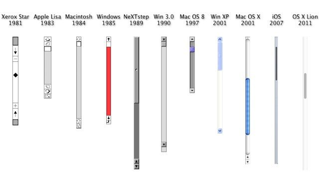
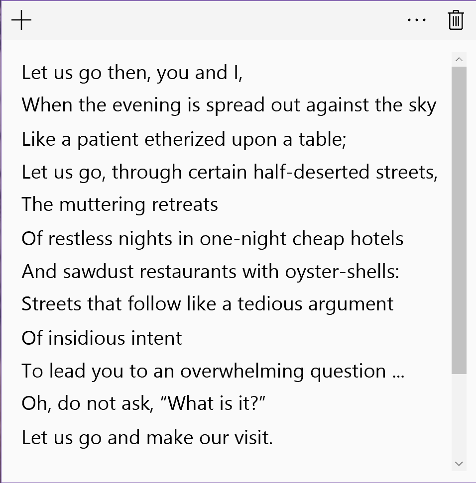
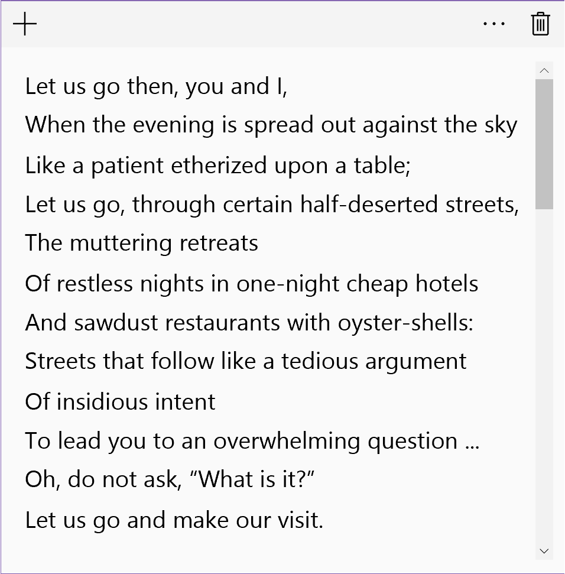
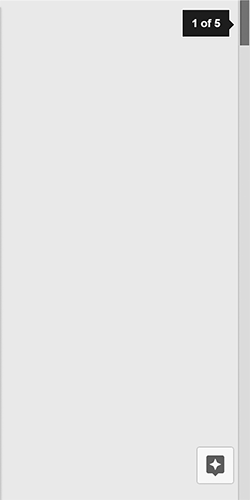
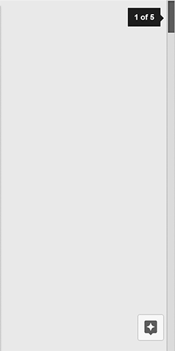
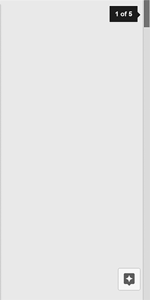
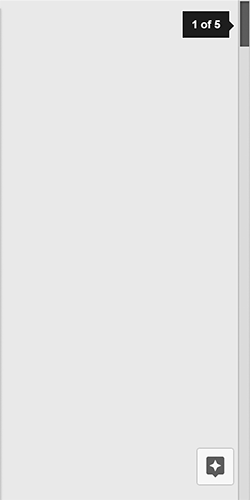

Typical Appearance
The scrollbar has one generally-accepted appearance: a tray on the right side of the computer screen in which a slightly off-colored block, known as the scroll thumb, rests. The shape and color of the tray and thumb vary across different platforms.
Typical Behavior
The action of scrolling up or down is universal. The user can move, or scroll, an entire page of content up or down by manipulating the scroll thumb (or one of the variants provided lower). Users can change the direction of their scroll in their settings - this will be discussed further in variants and platform-specific instances.
Across most devices, the scroll thumb will adjust in size to give the user an indication on the size of the document. This is a helpful form of feedback for the amount of content on any given page. A possible complaint, however, resides in the event that a page has an inordinate amount of content; in this scenario, the scroll thumb becomes very small and difficult to manipulate for some users.
 Events
An event is something that can happen to a user interface component. They are both conceptual and highly concrete in that events very frequently translate directly into a user interface component’s API.
Using the scrollbar component, the most relevant scrolling event is the click. A click event
indicates that the user has selected the scrollbar thumb. Secondary events include hover, indicating that a pointing device is explicitly within the bounds of the scrollbar thumb. In the event that the user clicks and holds a scrollbar, the release event is applicable.
The scrollbar will highlight during a hover event and then highlight brighter upon being clicked. This
provides a form of feedback that indicates scrollbar response upon additional activity performed.
 



State Diagram
A state diagram indicating the actions and states of a user interface component.
This is most likely an image. Bonus props if you use SVG.
And also, a state diagram implies, well, states. So be sure to describe them. Note also that there will usually be overlap between a component’s events and its state diagram. A sufficiently detailed state diagram, however, may have more activities than the “public” events that can be reported by a component.
Most button designs have the following states. The enabled and disabled states can be
viewed as “dormant” button states—they are the only states that a button can have when a user is not interacting with
it. The enabled state means that a user can interact with it, while the disabled
state means that a user cannot do so.
When a button is enabled, additional states may be triggered. Not all states are present in all button
implementations, but in general they are:
hover: For platforms with an explicit pointing element, positioning that element over a button may change the button’s appearance. This provides a form of feedback that states that the button will respond if additional activity is performed.armed: If the user initiates button-triggered behavior, such as a click on mouse-capable systems, the button may enter a state indicating that it is ready to be invoked. Many button implementations allow an “out” from this state, in case the user changes his or her mind in mid-action.
Component in Action
Embedded or linked video (by you or by others [and if by others give credit]) showing the component in action.
For components that are available on a web platform, you can embed an actual component right here, such as:
Variants
- Two Finger Scrolling
Two finger scrolling, originally introduced by Apple, is a new and more efficient way to scroll through pages on laptops. Although it is an easier tool to use, it is difficult to learn how it works because it is not intuitive. When users scroll down with two fingers on the trackpad, they expect the page to go down. Similarly, when they scroll up, they anticipate the page will move upwards. This intuition is formed by the way the scroll bar is designed. However, both OS X and Windows 10 introduce two finger scrolling in the opposite manner. This can make it harder and more frustrating for users to adjust to the change. On the other hand, once users are acclimated with this adjustment, it is easier to remember how it works, and they are less likely to forget how to use it; essentially, it becomes second nature. - Keyboard Controls
- Mouse Scroll Wheel

Priority Metrics
Talk about the five usability metrics in relation to this component. Not all components will have the same metric priorities. For example:
- Learnability
- Efficiency
- Memorability
- Errors
- Satisfaction
Because the button is such a fundamental part of virtually every user interface available today, it can be said that all usability metrics are equally important for this component. Users who are seeing a button in a given platform for the first time must not have any issues recognizing it and knowing what to do with it (learnability). The high priority of learnability also implies that memorability is a given.
Users must also never experience undue delays with using a button (efficiency), particularly because using a button almost always involves an instantaneous, immediate-result action. Users should almost never trigger a button by mistake (errors)—especially buttons whose actions result in significant changes to data or the real world.
If any metric at all can be considered as a “low priority” for buttons, it would be satisfaction. The button is such a utilitarian component that “fun” or “enjoyment” is hardly associated with its use. One exception to this prioritization may be for buttons in applications whose primary metric is satisfaction (e.g., games, entertainment). As a part of that overall system, making buttons “fun” may then become more important than in other situations.
Key Characteristics
This section is for describing “what makes for a good your component here?” Most likely, this is an amalgam of guidelines documents and platform-independent interaction design principles.
Feedback
Perhaps the most important interaction design principle that a button must follow is feedback. Users must never doubt whether:
- they did positively trigger a button (and thus its associated action)
- they successfully cancelled the triggering of a button, due to changing their minds midway through the action that triggers the button